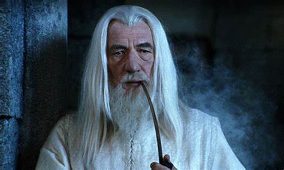
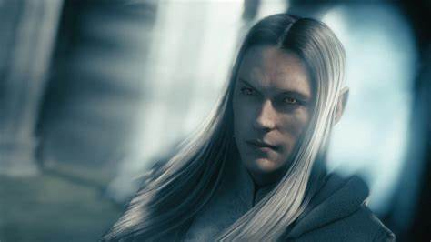

Эта книга оказала огромное влияние на литературу, особенно на
жанр фентези. Властелин колец очень объемная книга, которая писалась
автором далеко не один год, а когда он захотел ее напечатать, то
в издательстве заявили, что книга слишком большая и ее стоит
разделить на 3 части.
Первая часть называется Братство кольца,
вторая Две башни, а третья Возвращение короля.
Роман включает
в себя мифологию различных народов, однако помимо известных
ранее в мифах и легендах существ есть также новые, которые
придумал для своей книги сам Толкин, например орки.
Книга имеет огромное количество отсылок к реальной жизни.
Например, летающие твари на которых летали Назгулы издавая
истошный крик и невыносимую вонь являются отсылкой к нацисткой
авиации.
Кольцо власти часто сравнивают с ядерным оружием, однако
сам автор вряд ли проводил такие аналогии, так как начал писать
свою книгу еще до изобретения ядерного оружия.

Главный злодей
Саурон выглядит как высокий длинноволосый человек со светлой кожей
и волосами. Он втирается в доверия к разным королям и дарит
им кольца власти, после чего те становятся его рабами в виде
призраков.
Это также является к чему-то отсылкой, как например
белые колонизаторы дарили индейцам огненную воду, которая их и
плгубила.
Орки вымышленные Толкином это бывшие прекрасные эльфы,
которые благодаря влиянию черной магии превратились в мерзских
орков, которыми движет жажда крови.
Здесь явная алюзия на то, что
даже казалось бы самый позитивный человек может проявить свою
злую сущность, которая сидит глубоко внутри него.
Поскольку Толкин
был верующим христианином, то четыре
хоббита, которыя являюся главными героями действуют согласно
христианской моральной этике и из-за этого темный властелин,
не может их победить, так как не понимает их догики, он пытается
предвидеть их действия используя рациональную логику.
Так, например,
главный герой, хоббит по имени Фродо узнает, что гоблин Голлум
хочет его предать и убить, но Фродо решает не расправляться с ним и
из-за этого когда кольцо уже окончательно поработило разуи хоббита,
гоблин откусывает ему палец на котором было надето кольцо и таким
образом спасает его.
Есть также мнение, что Саурон это Сталин,
Мордор это СССР, а орки это русские коммунисты.
Толкину задавали
вопрос, так ли это на самом деле, но он не подтвердил данную
теорию.